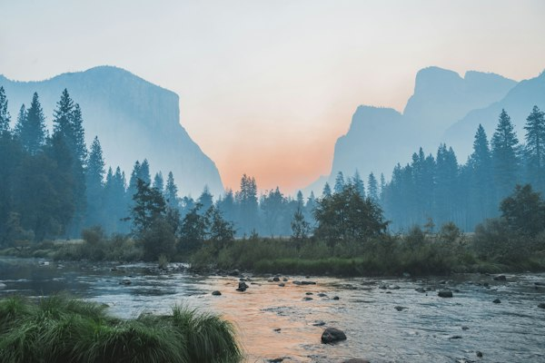
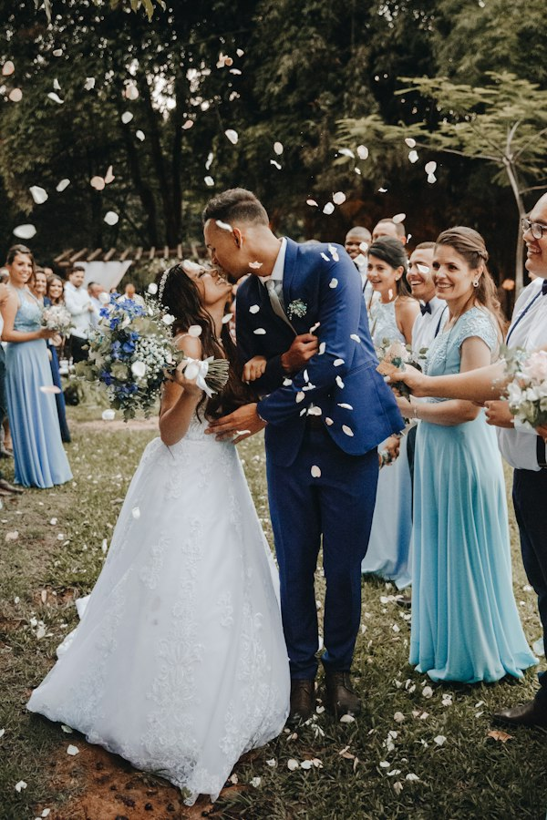
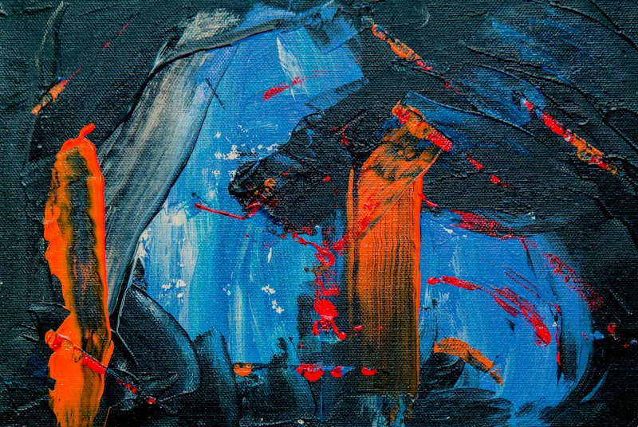

Photography is our craft. Community is our strength.
Connecting photographers and videographers across Tirupur through professional collaboration, learning and shared creative experiences.
About the association
A working community for Tirupur’s image-makers.
The association serves photographers and videographers of Tirupur — studio owners, freelancers and newcomers — through collaboration, learning and shared events.
Founded to champion professional standards, equipment welfare, and artistic solidarity across Kongu region image-makers.
Field photography session · Tirupur Photography Association
Serving photographers across Tirupur district since 1998.
Commercial studio owners, wedding cinematographers, and freelancers.
Advanced lighting, camera optics, color science, and post-production.
Honoring artistic merit, documentary storytelling, and innovation.
Upcoming events
Coming up next.
Workshops, photo walks, and competitive salons curated for association members.
Selected photographs
Our community, in frames.
Curated works by member photographers across weddings, documentary, fine art, and commercial assignments.
Latest announcements
From the association.
Office bearers
The people behind the association.
Connect with us
Visit the association office.
Located in central Tirupur. Open Monday through Saturday for member registrations, directory renewals, and technical consultations.
TPA Bhavan, 45 Kumaran Road, Tirupur — 641601
Phone: +91 421 2233445 · Mon – Sat: 10:00 AM – 7:00 PM

TPA Gallery Pavilion and Member Fellowship Hall
Membership